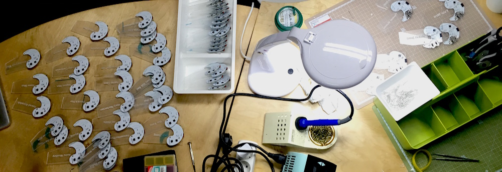
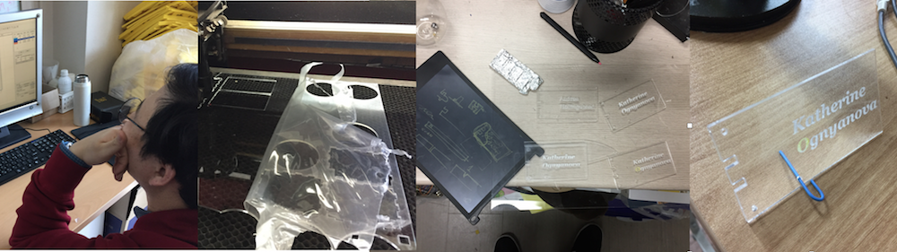
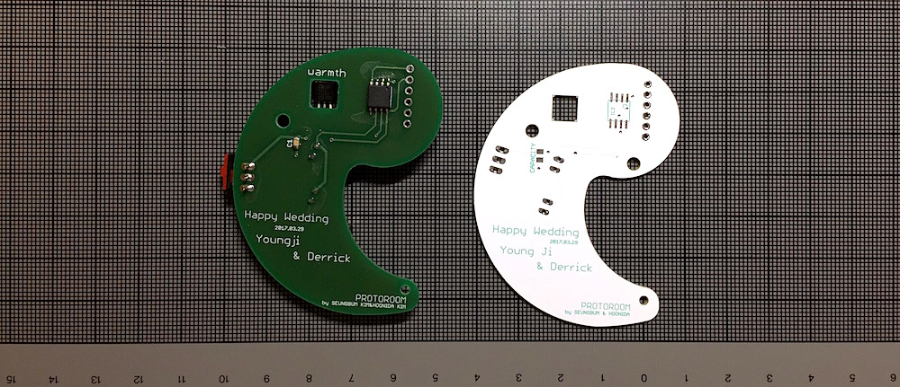

Story of Warmth
The wedding device for Young Ji & Derrick
Table of Contents
1 Warmth is
Warmth는 2017년 4월 1일 영지와 데릭의 결혼 http://derrick-youngji.com 을 축복해주기 위해 PROTOROOM이 만든 장치입니다. 결혼식 후 보스톤 과학 박물관에서 진행된 리셉션에서 하객들을 위한 Place Card 미국의 결혼식에서는 리셉션 자리가 따로 있군요. 하객들이 앉아야 할 자리에 이름표를 붙여주는 데 이를 Place Card라고 하나봅니다. 로 사용이 되었습니다. 아크릴에 각인된 하객의 이름이 LED에 의해 빛이 나며 따뜻한 입김을 불어 넣으면 박동합니다.

- 제작 : PROTOROOM (SeungBum Kim & Hoonida Kim)
- 여러 친구들의 조언과 도움이 함께 했습니다. :)
2 이야기의 시작
PROTOROOM의 김승범에게는 영지라는 여동생이 있습니다. 오랜 시간 미국에서 유학생활을 했고, 이제는 데릭을 만나 새로운 인생의 출발을 하게 되었습니다. 동생이지만 삶의 동료로서 PROTOROOM을 항상 지지해주고 관심을 가져주는 영지를 위해 후니다 킴과 김승범은 기억에 남는 선물을 주고 싶었습니다.
리셉션의 장소가 보스턴 과학 박물관인지라, 그리고 영지도 어떤 geek한, 그리고 PROTOROOM의 작업으로 어울릴만한 무언가가 있으면 좋겠다는 생각을 계속 해왔습니다. 몇 가지 엉뚱한 아이디어들이 오고 갔지만 시간은 계속 흘러 행사일이 다가오게 되었고, Place Card로 좁혀지게 되었습니다.
실은 앞으로 PROTOROOM에서 실험하게 될 작품의 Building Block을 쌓는다는 느낌으로 RF 기반의 사람들 간에 상호작용을 일으킬 수 있는 장치를 만들어볼까 생각도 했습니다만 몇 가지 예측하기 힘든 요소들로 사전 테스팅 없이 처음 가는 장소 어떤 설치나 워크숍을 위해 사전에 장소를 방문하고 환경적 제약들을 파악하는 것은 매우 중요하죠. 거의 예측이 가능한 곳이어도 처음 방문하는 장소에서는 항상 이상한 문제들이 발생하더라고요. 특히 RF와 같은 무선을 다룰 때에는, 그것도 제작 장소와 다른 나라에서 해본다는 것은 여러 제약이 있을거 같더군요. 에서 실험하기에는 무리가 있다 판단을 했습니다.
최종적으로 영지와 데릭은 새로운 Place Card로써 몇 가지 요구사항을 던져주었습니다.
- Place Card의 원래 기능에 충실해야 함, 이름이 잘 보여야겠지
- 60여명의 하객
- 테이블 위에 세울 수 있어야 함
- 뭐랄까 3D 프린터나 레이저컷 등등 뭔가 geek한 특징이 있으면 좋겠음 :)
- 하객들에게 일종의 기념 선물이 되면 좋겠음
3 Dirty Sketches
PROTOROOM은 컴퓨팅 매체에 대한 어떤 개념들을 담기 위해 하드웨어와 소프트웨어를 이용한 키트를 만들어왔습니다. 이번처럼 리셉션 이벤트의 Place Card라는 구체적인 목적을 충족시키는 작업은 처음인데요, 일정 상 3D 프린터 기반보다는 아크릴컷을 기본 형태로 가기로 했고, 따뜻한 인터렉션을 만들 수 있는 무언가를 생각하게 되었습니다.
기존에 작업실에 있던 아크릴 조각과 예전에 후니다님이 제작한 PCB, 집에 굴러다니는 면봉으로 Place Card 더티 하드웨어 스케치를 해봤습니다. 대충 개념적으로 이런 모습이 되면 전자 장치 기반의 Place Card가 되지 않을까?하고요.
4 실험과 프로토타이핑
4.1 아크릴 실험

4.2 PCB 조각
PCB 디자인에는 공기 조각가이자 PCB 조각가(?)이신 후니다님이 큰 역할을 해주었습니다. 덕분에 저는 SW개발, 재료 및 일정 관리 등에 더 집중할 수 있었죠.

샘플을 먼저 만들어 테스팅 후 세부적인 수정을 해서 최종 흰색 바탕에 녹색 실크가 들어간 PCB가 만들어졌습니다.
디자인은 전통적인 악세사리인 '곡옥 그 의미를 조금 더 찾아보니 태극 문양의 원형이었다는 말도 있고, '다산(?)'의 의미도 있어서 이번 작업에 어울린다는 생각을 했습니다. :) '에서 영감을 받았습니다.
5 제작 & 친구들의 도움
5.1 재료의 수급
Warmth를 제작하기 위해 다음과 같은 핵심 재료들이 사용되었습니다.
5.1.1 PCB
항상 한샘디지텍에 맡기고 있습니다. 간단하게 샘플을 만들 때에는 좀 비싸다는 느낌도 있지만 결과물이 확실하고, 주문하는 과정에서 발생할 수 있는 문제에 대해서도 적극 대응해줍니다.
5.1.2 ATtiny85 10SU
아두이노 기반의 작은 장치를 만들 때 애용하고 있습니다. 대량 구매를 해서 단가를 낮출 수 있었는데, 요새는 그래도 가격대가 많이 올라가서 아쉽습니다. 자주 써오던 20XX에 비해 10XX이 낮은 전압에서도 동작해서 이번에 선택했는데 어느정도의 차이가 날지는 좀 더 살펴봐야겠습니다.
5.1.3 TMP36
온도센서입니다. 너무 비쌉니다. 구로에서 좀 싸지 않을까 발품 팔아봤지만 부품도 안보이고, 그나마 있는 곳은 역시 비싸더군요. 일부만 구매하고 인터넷으로 나머지를 좀 더 싸게 주문했습니다. 헬로긱스의 병월님도 이거 너무 비싸다고 thermistor를 쓰는게 더 좋지 않겠냐 조언해주었지만, 이번에는 디자인 상 이걸로 하기로 했습니다. 대체 부품으로 LM35가 저렴하긴했는데 동작 전압에서 좀 차이를 보이는거 같아 더 이상 테스팅은 안했습니다.
5.1.4 LED
아크릴을 밝게 비추기 위해서 어떤게 좋을지 더 실험이 필요했는데, 이번에는 3mm 라운드타입 고휘도 LED 2개를 사용했습니다.
5.1.5 CR2032배터리와 smd타입의 배터리소켓
가장 흔하게 쓰는 코인 배터리이지만 아쉽게도 항공기 안에 가지고 들어갈 수가 없습니다. 작년 일본 ICC에 키트를 가져갈 때에도 겪은 문제로 혹시라도 포장한 여러 키트에 넣고 갈 경우 엄청 고생할 수 있는 부분이죠. 이번엔 동생이 따로 미국에서 구매를 해야했네요.
smd타입의 배터리 소켓은 예상했던 것 보다도 납땝하기가 번거로웠습니다. 납땜 부위가 넓어서인지 납이 고르게 잘 붙지 않았고, PCB에서 - 극을 연결이 되도록 추가로 얇게 납을 발라야하는 일도 있었죠.
5.1.6 아크릴
을지로에서 압출식 아크릴을 원판으로 구매를 했습니다. 일반 구매보다 가격이 저렴하다 생각은 했지만, 레이저컷을 실험해보면서 아크릴마다 각인 시에 레이저 파워에 따라 글자 주변이 흉하게 녹는게 발생하더군요. 나중에 다시 작업한다면 아크릴을 몇 종류 더 테스트해봐야겠습니다.
5.1.7 PC 투명 나사와 너트
폴리카보네이트(PC) 나사와 너트는 후니다님이 잘 사용하셔서 이번에도 적용했습니다. 을지로와 구로에서 나사와 너트를 구매했는데 보기보다 가격이 꽤 나가는 재료입니다. 특히 국산과 일본산의 품질 차이가 좀 있다고 하는데, 을지로에서 산 너트는 품질이 좀 균일하지 않았습니다. 반면 구로에서 산 국산 너트는 부드럽게 나사에 잘 들어가서 앞으로는 여기 제품을 이용해야겠습니다.